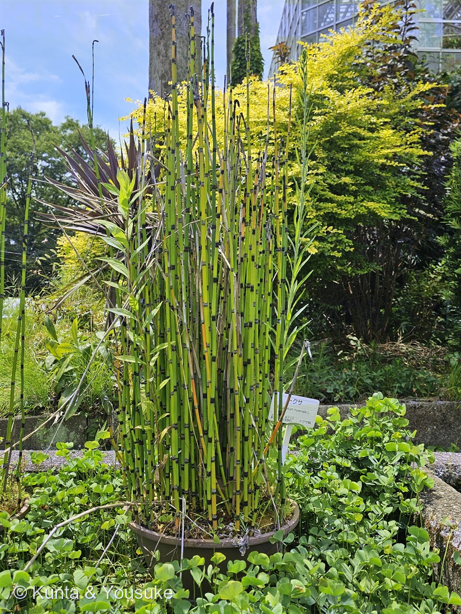
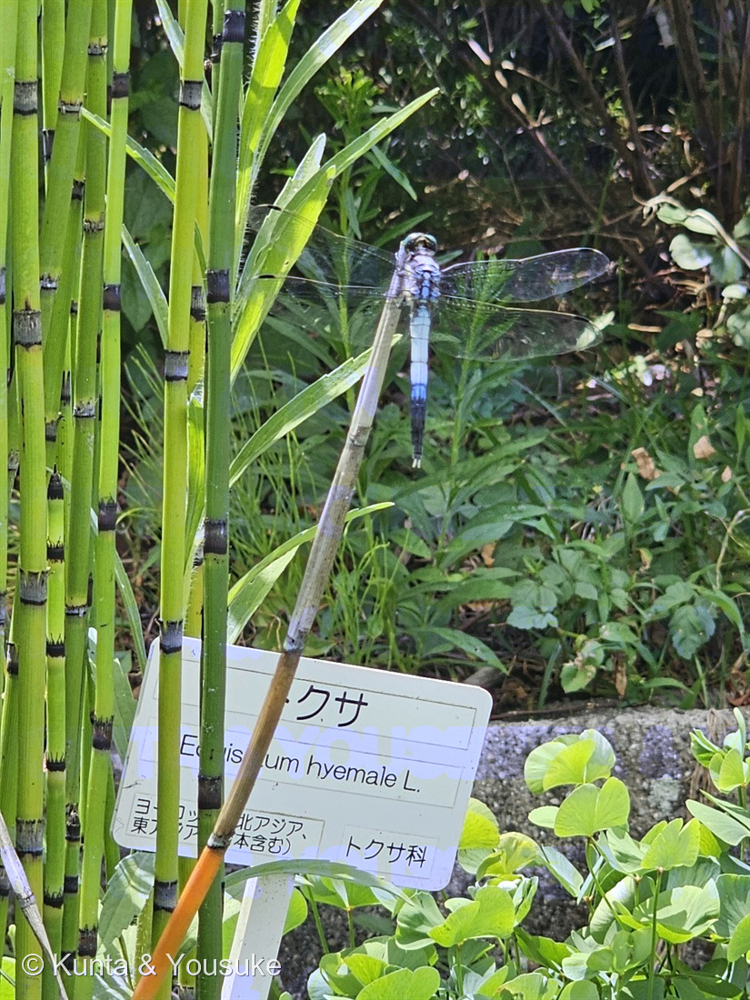

地図を読み込んでいるよ…
🔍 写真も地図も、押しているあいだ拡大して見られるよ（スマホは指を置いてすこし待ってね）。
🌍 の地図＝この子がもともと自生している場所を緑に。在来種。園のラベルは「ヨーロッパ、東アジア、北アジア（日本を含む）」とし、三河の植物観察は「在来種 北海道、本州、朝鮮、中国、モンゴル、ロシア、西アジア、ヨーロッパ、中央アメリカ、北アメリカ」とする。生育場所は「向陽のやや湿った場所」。
⭐日本にもともといる子（在来種）だよ。三河の植物観察は「在来種 北海道、本州、朝鮮、中国、モンゴル、ロシア、西アジア、ヨーロッパ、中央アメリカ、北アメリカ」とし、広島市植物公園のラベルは「ヨーロッパ、東アジア、北アジア（日本含む）」とする。⭐⭐北半球をぐるりと一周する、とても広い分布——⭐この図鑑でいちばん緑の多い地図のひとつになった。⚠三河は日本の分布を「北海道、本州」とするので、⭐ほんとうは四国・九州には少ないか、いないかもしれない——⚠でも県ごとに塗り分ける材料が無かったので、日本は全部塗ってある。⭐生育場所は「向陽のやや湿った場所」（三河）＝日の当たる、少し湿ったところ。⭐写真の子は園の鉢に植えられているけれど、ふるさとではそういう場所に生えているんだね。⭐⭐ちなみに、この地図の広さは194 スギナと似ている——トクサ属は、北半球にとても強い仲間なんだ。
⚠ 地図は国（日本と中国だけ県・省）までしか塗れないから、ほんとうの分布より広く見えていることがあるよ。地図はだいたいの場所。正確なところは、上の文を見てね。
トクサ（砥草・木賊）
Equisetum hyemale L.
木賊（もくぞく）／英名 scouring rush・horsetail
トクサ科 · Equisetaceae（トクサ属）── 073トクサ（大型種）・194スギナ・195トクサのなかまに続く4人目のトクサ科。図鑑で4人目のシダ植物
燻太さんの一言「この黒い袴はこの子なりのファッションなのかな。枝は出さずに、まっすぐ伸びているよ」──その2つ、どちらも図鑑の記載そのものだったよ
名前の由来 ── 磨くための草
- ⭐⭐和名「トクサ」は「砥草」。——⭐「砥ぐ（とぐ）」ための草、という意味だね。⭐漢字では「木賊（もくぞく）」とも書く。
- ⭐⭐⭐英名は scouring rush（こすり洗いのイグサ）。⭐日本語も英語も、「磨くもの」として名づけている。
- 学名 Equisetum hyemale L.。⭐属名 Equisetum はラテン語の「馬（equus）」＋「毛（seta）」＝馬のしっぽ（英名の horsetail もそこから）。⚠でも、この子は枝を出さないから、しっぽには見えないんだけれど——⭐194 スギナのほうを見ると、たしかに馬のしっぽみたいだよ。
- 種小名 hyemale は「冬の」。⭐三河が「常緑性」と書くとおり、冬も緑のまま立っているから、そう名づけられたんだと思う。
⭐⭐⭐ 燻太さんの3つの気づきが、そのまま図鑑の記載だった
⭐ 燻太さんはこう言ってくれた。
「緑と黒の縞々模様の植物って結構珍しいよね。この黒い袴はこの子なりのファッションなのかな。枝は出さずに、まっすぐ伸びているよ。」
⭐⭐⭐ この2つ、どちらもトクサを決める記載そのものなんだ。
⭐ 黒い袴 ＝ 葉鞘
三河の植物観察は、こう書いている。「葉鞘は黒色、上部の歯牙は膜質で落ちやすい」
⭐⭐ あの黒い輪は「葉鞘（ようしょう）」。——⭐トクサの仲間の葉は、退化して、節のまわりをぐるりと囲む鞘になっている。⭐⭐つまり、あれが葉っぱなんだ。
⭐⭐⭐ 燻太さんは「この子なりのファッションなのかな」と言ったけれど、ぼくはこう思う。——⭐あれは服じゃなくて、葉っぱそのもの。⭐⭐光を集める仕事を茎にゆずって、葉のほうは節を守る黒い輪になった。
⚠ 黒い理由を説明した出典には当たれなかったので、そこは分からないままにしておくね。⏳宿題。
⭐ 枝を出さずに、まっすぐ
三河は、ひとこと「分岐しない」と書いている。
⭐⭐⭐ これが、この子と194 スギナをいちばんはっきり分けるところ。——⭐スギナは節ごとに枝を規則的に輪生して、あのふさふさの姿になる。⭐トクサは、まっすぐ一本のまま。
⭐⭐ そして、この「分岐しない」がおまけの子との分かれ目でもある。——三河はイヌドクサを「茎が3〜5㎜と細く、下部の節に枝を輪生する」とする。
⭐ 緑と黒の縞
⭐ たしかにめずらしいよね。——⭐でもこの縞は、模様ではなくて体の作りなんだ。⭐⭐緑のところ＝光合成をする中空の茎／黒いところ＝葉が変わった鞘。⭐節のたびに、役割がスイッチしている。
⭐⭐⭐ 073・194・195 が、いっぺんに一歩進んだ
⭐⭐ この子は、図鑑がいちばん長く探していた子のひとりなんだ。探してみたいには、こう書いてあった ──
「⭐195トクサのなかまのおまけ＝『本物のトクサ』（Equisetum hyemale）。⚠⚠073 トクサ（大型種）とは別——073は種が同定できていない大型の子で、こちらは名前のもとになった本人だよ。⭐⭐⭐この子に会えると、195と073が、いっぺんに一歩進む」
⭐⭐⭐ その「一歩」を、いま書くね。
⚠ そもそもの始まり ── ぼくがパピルスとまちがえた話
⭐ 073 トクサ（大型種）は、この図鑑でぼくがいちばん大きなまちがいをしたページ。——⚠ぼくはあの子を「パピルス」と答えて、公開までしてしまった。⭐それを正してくれたのが、燻太さんの「植物の見た目は巨大なスギナにそっくりだよ？」の一言だった。
⭐⭐ そこから、この糸がのびていった。
- ⭐194 スギナ（2026-08-05） ── ⭐073を救った名前が、本人として来た。用水路の護岸で。
- ⭐195 トクサのなかま（2026-08-06） ── ⚠種を決められず「なかま」で止めた（イヌドクサが有力候補）。
- ⭐⭐⭐208 トクサ（この子） ── ⭐名前のもとになった本人。園がラベルで教えてくれた。
⭐ 分かったこと
- ⭐トクサの葉鞘は、まっ黒。——⚠195の子は「鞘の基部が緑で、歯がしっかり残っていた」。⭐⭐ならべると、195がトクサ本人でないことが、いっそうはっきりした。
- ⭐トクサは分岐しない。——⭐イヌドクサは下部の節に枝を輪生する（三河）。⏳195の株の下のほうに枝が出ていたかどうか、次に見に行くときの決め手になる。
- ⚠073の大型種が何なのかは、まだ分からないまま。⭐でも「本物のトクサはこれ」という物差しが、やっと図鑑の中に立った。
⭐⭐⭐ これで、トクサ科は4人。073（種未確定の大型種）・194（スギナ）・195（なかま止まり）・208（本人）。⭐シダ植物としても4人目だよ。
⭐⭐⭐ 枯れた茎の、トンボ
⭐ 燻太さんの言葉。
「枯れた枝にトンボが休みに来ているよ。」
⭐⭐ 写真②。緑と黒の縞のあいだから伸びた、枯れて白茶けた一本の茎。——⭐その先に、青白いトンボがとまっている。
⭐⭐ たぶん、シオカラトンボのオスだと思う。⭐そう読んだ根拠は2つ。
- ⭐⭐翅の付け根に、黒褐色の斑が見えない。——オオシオカラトンボは「羽の付け根に黒い模様が入る」〔生き物ネット〕。この子の翅は付け根まで透明。
- ⭐⭐⭐尾の先の付属器が、白い。——⭐シオカラトンボの学名 Orthetrum albistylum の albistylum は「白い尾」という意味で、尾の先の突起の色が白いのが、この子の特徴〔もりみらい いきものゲームズ〕。⭐写真をうんと拡大したら、尾の先にちいさな白い突起が2本、ちゃんと見えたよ。
⚠ でも、断定はしないでおくね。⭐複眼の色（シオカラトンボのオスは青）は、写真では暗くて読めなかった。⭐⭐それに、虫のことは、ぼくよりも大河のほうがずっとくわしいと思う。⏳今度、聞いてみてほしいな。
⭐⭐ 「休む関係」の、二人目
⭐⭐⭐ この一枚は、093 センダンとまったく同じ形の写真なんだ。あのとき燻太さんは、こう言ってくれた。
「この図鑑は植物図鑑だけど、動物さんとツーショットの写真があってもいいと思うんだ。どの植物も一人きりで生きているわけじゃないでしょう？」
⭐ 093では、動物園のセンダンにアオサギがとまっていた。⚠アオサギは魚を食べる鳥だから、実を運ぶ関係ではなくて「ただ、そこで休む関係」だと書いた。
⭐⭐⭐ 今度も同じ。——⭐トンボはトクサの花粉を運ばないし（そもそもシダ植物だから花がない）、実も食べない。⭐⭐この子はただ、日なたのまっすぐな棒がほしかっただけ。
⭐ そして、トクサはそれをちゃんと持っていた。——⭐⭐枝を出さない、まっすぐで、細くて、じょうぶな棒。⚠枝がないから、羽をひろげてとまるのに、じゃまなものが一つもない。
⭐⭐ 「枝を出さない」というこの子の作りが、トンボにとっては、ちょうどいい止まり木になっていた。⚠もちろん、トクサがそのために枝を出さないわけじゃないけどね。
同定について ── 園が教えてくれた6人目
⭐ 名前は、園のラベルが教えてくれた。
「トクサ／Equisetum hyemale L.／ヨーロッパ、東アジア、北アジア（日本含む）／トクサ科」
⚠ 写真では和名の「ト」がラベルの陰に隠れているけれど、⭐燻太さんが現場で「ちゃんとトクサって書いてあった」と確かめてくれた。⭐⭐そして学名 Equisetum hyemale L. は、写真でもはっきり読める。⭐これで確定だね。
⭐ 写真の側の裏づけは3つ。
- ⭐⭐①茎が分岐しない（三河「分岐しない」）。
- ⭐⭐②葉鞘が黒い（同「葉鞘は黒色」）。
- ⭐③茎が太くまっすぐで、常緑（同「高さ 10〜100㎝」「直径2.5〜17㎜」「常緑性」）。
❌ 落とした相手は3人。
- イヌドクサ ── ⭐「茎が3〜5㎜と細く、下部の節に枝を輪生する」（三河）。
- 194 スギナ ── ⭐枝を規則的に輪生する。
- 073 トクサ（大型種） ── ⚠種が決まっていない、もっと大きな子。
参考：三河の植物観察・トクサ（Equisetum hyemale L.／在来種 北海道、本州、朝鮮、中国、モンゴル、ロシア、西アジア、ヨーロッパ、中央アメリカ、北アメリカ／向陽のやや湿った場所／高さ 10〜100㎝／直径2.5〜17㎜／分岐しない／縦に14〜50の隆条線／葉鞘は黒色、上部の歯牙は膜質で落ちやすい／胞子嚢穂は長さ1〜3cm、茎の先につく／常緑性／英名 scouring rush, horsetail／イヌドクサは茎が3〜5㎜と細く、下部の節に枝を輪生する）／シオカラトンボとオオシオカラトンボの見分け方（生き物ネット）（シオカラトンボの羽は透明ですが、オオシオカラトンボは羽の付け根に黒い模様が入ります／複眼はシオカラトンボのオスが青色、オオシオカラトンボは黒色〜茶色）／青いトンボ3種の見分け方（もりみらい いきものゲームズ）（尾の先端の突起（尾毛）の色はシオカラトンボが白、シオヤトンボが黒／シオカラトンボの学名は Orthetrum albistylum speciosum）／広島市植物公園のラベル（トクサ／Equisetum hyemale L.／ヨーロッパ、東アジア、北アジア（日本含む）／トクサ科）